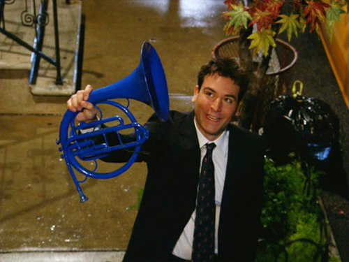
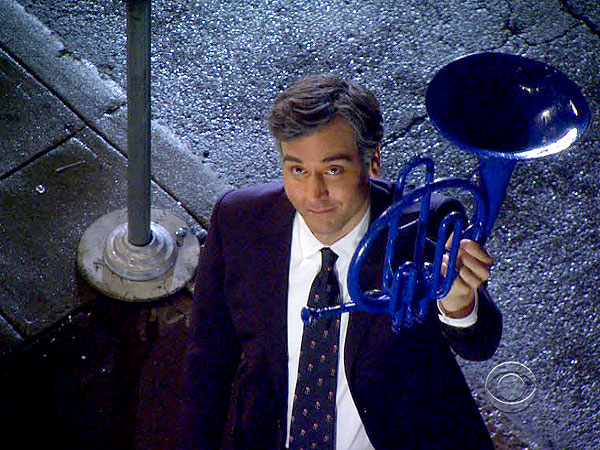

Blue French Horn
Pictures
 The story
In Come On, Ted surprises Robin in her apartment with candy, flowers, and a group of musicians with blue instruments (in reference to the Blue French Horn).
In Something Blue, Ted was forced to return it to the Carmichaels restaurant when they took his driver's license. They decide to return it to symbolize the end of their relationship.
In Twin Beds, Barney and Ted get drunk and try to win Robin back, and Ted has stolen the French Horn again. After moving in with Don, she leaves the horn behind in her empty room at Ted's apartment.
In No Pressure, Ted picks Robin up at the airport and takes her to the same restaurant with the Blue French Horn, where it is shown to be chained up.
In Platonish, as Marshall is trying to convince Ted to get back together with Robin, Ted mentions that if he was going to get back together with Robin he would use the Blue French Horn.
In the final episode, the last shot of the series is Ted holding it for Robin once again outside her door.